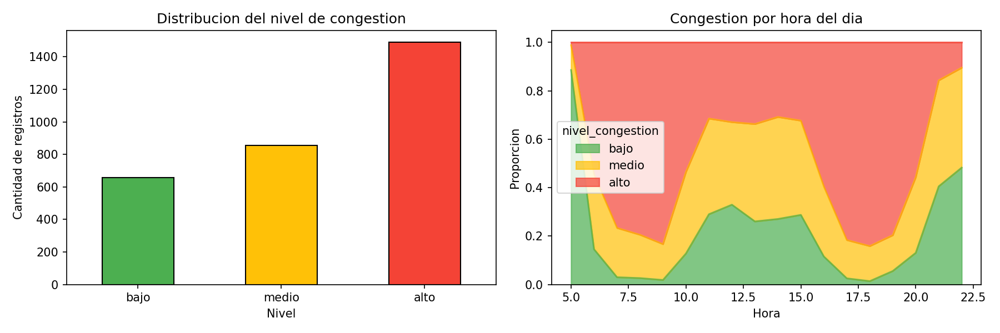
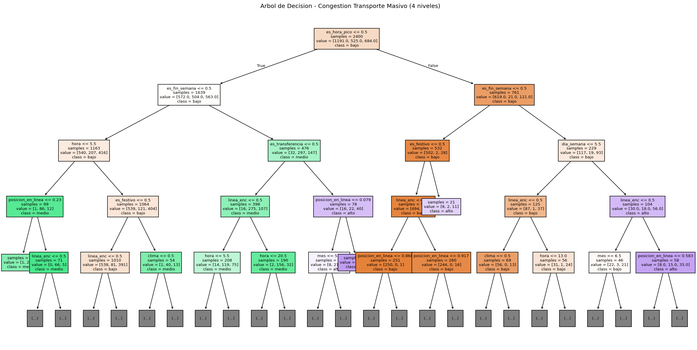
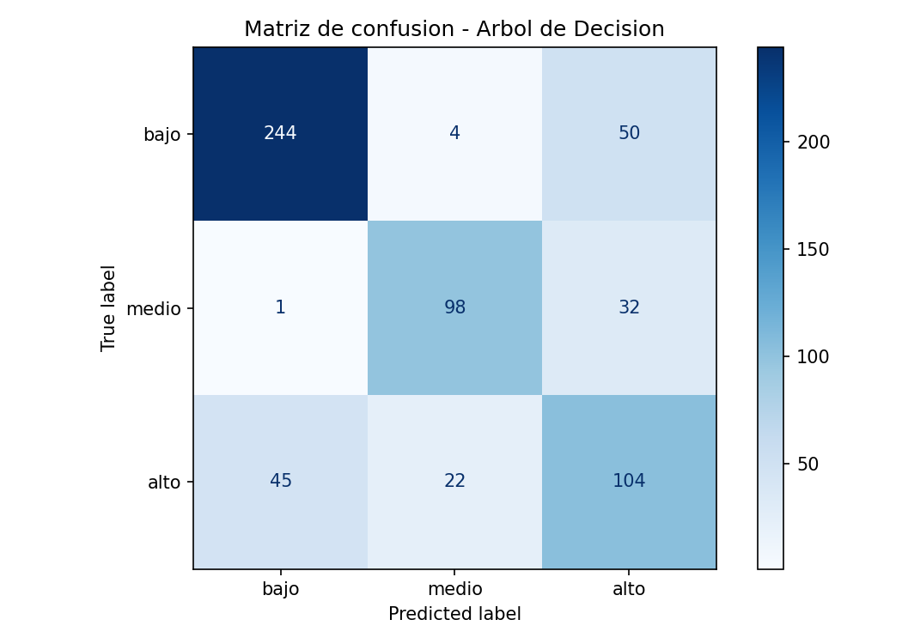
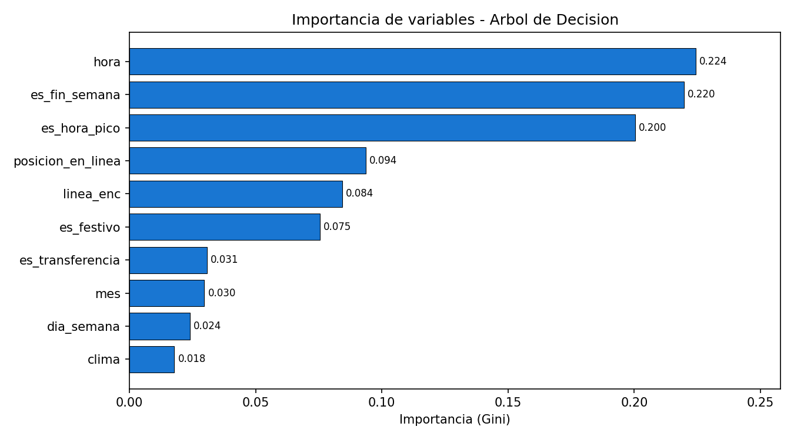
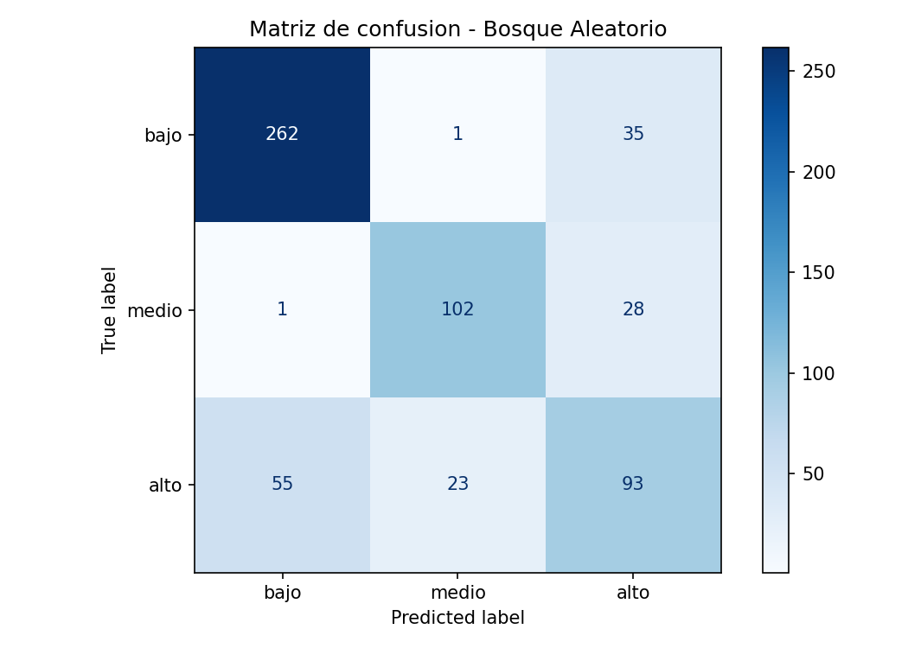
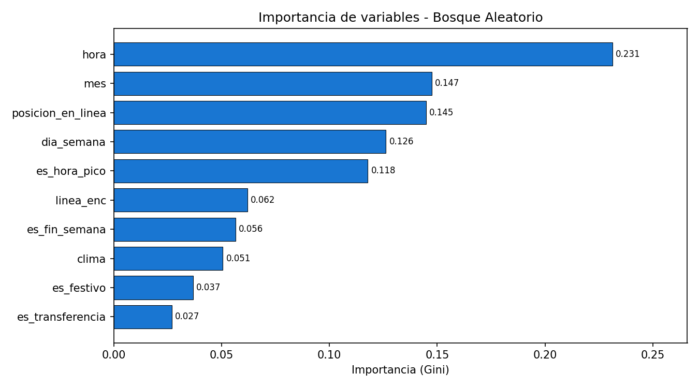
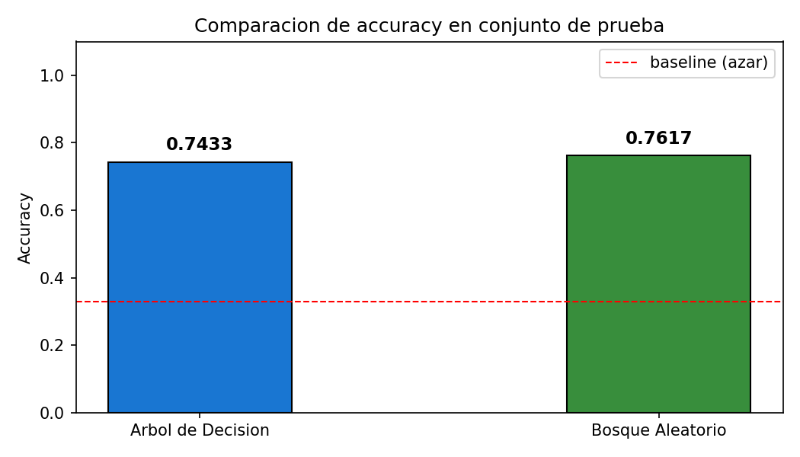

Transporte Masivo — Metro de Medellin • Inteligencia Artificial Avanzada
Modo completo (demo + interactivo):
Solo casos de prueba predefinidos:
Solo modo interactivo (ingresar origen y destino):
Requiere Python 3.10+. No necesita instalar dependencias externas; usa unicamente la biblioteca estandar.
Escriba lista para ver todas las estaciones disponibles.
Escriba salir para terminar.
knowledge_base.py
Define los hechos del mundo: estaciones con coordenadas cartesianas (x, y), conexiones unidireccionales con tiempo en minutos, y 4 reglas logicas (R1–R4).
inference_engine.py
Aplica encadenamiento hacia adelante (forward chaining): ejecuta R1 para hacer el grafo bidireccional, R2 para detectar estaciones de transbordo y R3 para fijar la penalizacion por cambio de linea. Devuelve el grafo listo para la busqueda.
search.py
Recibe origen y destino. Usa una cola de prioridad (min-heap) con f(n) = g(n) + h(n), donde g es el tiempo acumulado real (incluye penalizacion R3) y h es la distancia euclidiana a destino (heuristica admisible). Devuelve el RouteResult optimo.
main.py
Orquesta todo: inicializa el motor, imprime reglas y estaciones, ejecuta casos de prueba y/o arranca el modo interactivo segun los argumentos de linea de comandos.
Hechos (estaciones, conexiones) y reglas logicas R1–R4.
Motor de inferencia por encadenamiento hacia adelante. Construye el grafo de navegacion.
Algoritmo A*. Encuentra la ruta de menor costo con heuristica euclidiana admisible.
Punto de entrada. Modo demo y modo interactivo via argumentos CLI.
math.hypot) para la heuristica h(n). stdlib
Rule, RouteResult y el nodo interno _Node de A*. stdlib
Optional, Callable) para mayor claridad en las firmas. stdlib
sys.argv). stdlib
Todas las librerias son de la biblioteca estandar de Python. No se requiere instalar nada adicional.
Prediccion del nivel de congestion en estaciones • Arbol de Decision + Bosque Aleatorio
Paso 1 — Instalar dependencias:
Paso 2 — Generar el dataset sintetico:
Paso 3 — Entrenar y evaluar los modelos:
Los graficos y matrices de confusion se guardan automaticamente en la carpeta resultados/.
| Feature | Tipo | Descripcion |
|---|---|---|
| hora | int (0–23) | Hora del dia |
| dia_semana | int (0–6) | 0 = lunes … 6 = domingo |
| es_fin_semana | bool | 1 si sabado o domingo |
| es_hora_pico | bool | 1 si hora pico (7–9h o 17–19h) |
| linea_enc | int (0–2) | Linea codificada: A=0, B=1, K=2 |
| posicion_en_linea | float (0–1) | Posicion relativa de la estacion en su linea |
| es_transferencia | bool | 1 si es estacion de transbordo |
| mes | int (1–12) | Mes del ano |
| es_festivo | bool | 1 si es dia festivo en Colombia |
| clima | int (0–2) | 0=soleado, 1=nublado, 2=lluvia |
| nivel_congestion | str | TARGET: bajo / medio / alto |







El Bosque Aleatorio supera al Arbol de Decision en 1.84 puntos porcentuales.
La variable mas importante en ambos modelos es hora,
seguida de indicadores temporales como es_hora_pico y
es_fin_semana, lo que es coherente con el comportamiento
real del transporte masivo urbano.
Genera datos_transporte.csv con 3 000 registros sinteticos basados en reglas del dominio de transporte.
Dataset con 10 features y variable objetivo nivel_congestion (bajo / medio / alto).
Entrena Arbol de Decision (con GridSearchCV) y Bosque Aleatorio. Genera graficos en resultados/.
Carpeta con 7 graficos PNG: exploracion, arbol, matrices de confusion, importancia de variables y comparacion.
DecisionTreeClassifier, RandomForestClassifier, GridSearchCV, metricas de evaluacion.
Instalar con: pip install pandas scikit-learn matplotlib seaborn